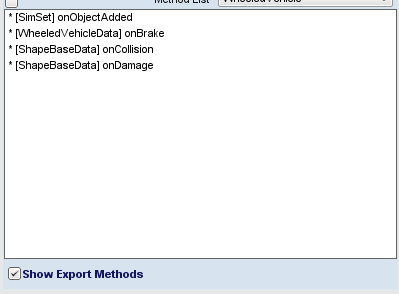

Object Method Explorer/Script Export GUI
SysDoc demo implementation

The Object Method Explorer/Script Export GUI allows exploring class console methods defined for an object and exporting selected methods to a script file. Methods can be viewed by inheritance level and methods can be exported for either the selected object or the parent base class.
Clicking on an item from the list will bring up the method prototype and full usage documentation in the information pane. Usage documentation is parsed from properly formatted meta-data defined in the engine code.
For GameObject derivatives with a datablock, the GUI can switch between datablock and object methods.
Note: It is possible to select methods defined on the datablock for export in combination with methods defined on the object.

Selecting an inheritance level will show only methods defined in the selected ancestor class.
Selecting the "view all" checkbox will display all console methods defined for the object/datablock.
Selecting the "view all" checkbox will display all console methods defined for the object/datablock.
Exporting
Clicking on the export checkbox will select a method for exporting.
Entries selected for export will be highlighted with an (*) in the object list.

Once all desired methods are selected, the export list can be reviewed by clicking on the "Show Export Methods" button.
Note: to get back to normal list functionality, click on the "View All" checkbox.
The export options section contains options to set up export parameters.
Clicking the "export" button will bring up a file selector and export all selected methods.
| Documentation Comments: |
Determines the level of comments output to script. Options:None, Brief, Full |
| Export Methods For Class: |
Allows outputting methods for parent class. In this example, checked would output methods scoped to WheeledVehicle and WheeledVechicleData and unchecked would scope output methods to car and TgeBuggyCar. |
| Append to File: |
Append exported classes to existing file, otherwise file will be overwritten. This allows exporting both parent and object methods to the same file with multiple saves. |
How to Launch GUI
To use the GUI, the engine must be compiled with the TSDoc/SysDoc resource files, and the resource script files need to integrated following directions for the desired T3D version.
The command to display the GUI is:
ClassMethodExport.showDlg(consoleObject);Assuming everything installed correctly, this should launch the GUI focused on the selected object.